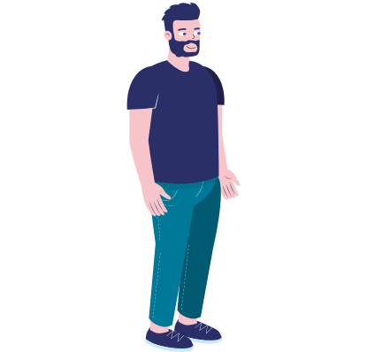

/>
Projet scrollytelling créé dans le cadre du cours Optimisation Web - Intégration multimédia - Collège Montmorency. © 2024 - Conception : Joshua Gonzalez-Barrera | Développement Web : Joshua Gonzalez-Barrera

Défiler